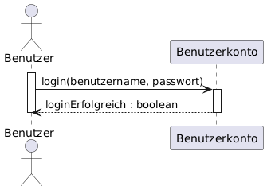
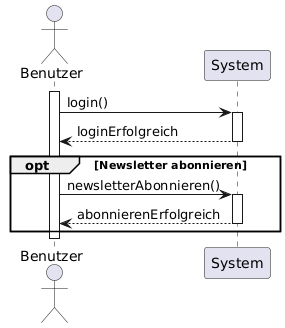
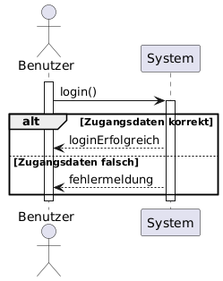
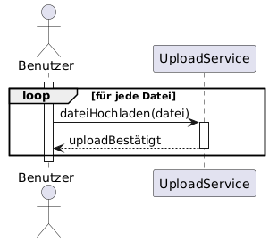

Definition
Ein **Sequenzdiagramm** visualisiert die zeitliche Abfolge von Nachrichten (Methodenaufrufen) zwischen Objekten innerhalb eines Szenarios.
Zweck & Verwendung
- Verhaltensmodellierung: Darstellung von Interaktionen in Use Cases oder Anwendungsfällen
- Design: Festlegung von Kollaborationsabläufen zwischen Komponenten
- Dokumentation: Nachvollziehbare Sequenz für Entwickler und Tester
Praxisrelevanz
- Klare Sicht auf Kommunikationsfluss und zeitliche Abhängigkeiten
- Erkennung von Engpässen oder unübersichtlichen Abläufen
- Grundlage für Mocking und Test-Skripte
Grundelemente
- Lebenslinie: Vertikal gestrichelte Linie unter einem Objekt- oder Rollen-Namen
- Aktivierungsbalken: Rechter Winkel auf der Lebenslinie, zeigt Ausführungszeitraum
- Nachricht: Pfeil von Sender zu Empfänger, beschriftet mit Methodenname und Parameter
- Synchron / Asynchron: Voll/Pfeilspitze oder offen/Pfeilspitze
- Rückgabe: Gegengerichteter gestrichelter Pfeil mit Rückgabewert
- Fragment (Optional): Bedingte/Schleifenbereiche mit Rahmen (alt, loop, opt)
Beispiel Grundsymbole

Beispiel Opt-Fragment

Beispiel Alt-Fragment

Beispiel Loop-Fragment

OOP-Bezug
Sequenzdiagramme verdeutlichen, welche Methoden in welcher Reihenfolge auf Klassen und Objekte wirken und unterstützen so das API- und Interface-Design.
Tools & Links
- PlantUML: Sequenzdiagramm-Syntax
- Mermaid: Markdown-integriert
- UML-Startseite